I
第四章 加工篇
第四章加工篇
範圜
本章「加工」係針對溫室結構所需加工處理項目進行相關技術規定
與說明。
目的
溫室實為一裝配式的建築系统，而基於材料的選擇與結構的設計，
亦需經適當的製造程序設計與正璀地製造加工，才能如維裝時能正維且快速的完成安裝維立。若因製造程序失當，常會勞師動眾且耗時耗力，製造精度不佳，則造成維裝至一部分後又需現場修正及重工，動火動銲又破壞已完成的表面處理，將影零結構安全品質，並徒增成本及拖延工
期。
基於溫室構造安全，於加工上，需依設計圖面進行材料採購，並針
對材料以正璀的驗收、儲放，並經製程設計，進行材料前處理、加工及後處理。
分類
温室構造安全手冊第四章-加工，將包含以下主要技術：
(1)機械加工：切削加工、成形加工 (2)連接工程：機械接合、焊接接合
(3)表面處理：基材處理、鍍層處理、塗層處理、瞿層處理規範
本節部分相關國家之國際標準如下：
中華民國銅構造建築物銅結構泥工規範
中華民國冷軋型銅構造施工規範
日本園藝用花設設計施工標準仕樣書
瑞典銹蝕硏究皖（ SCI）
具國鋼結構油漆協會（ SSPC）
4.1
4.1.1
1. 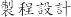
(1) 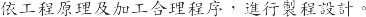
(2) 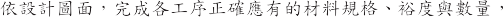
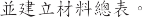
(3)
(4) 
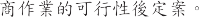

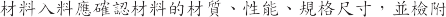
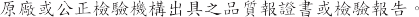
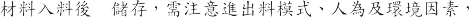
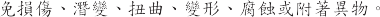
2. 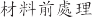
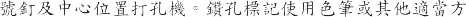
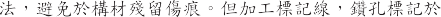
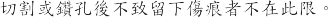
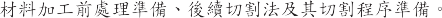
3. 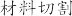
(1) 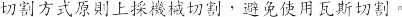
(2) 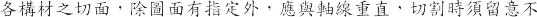
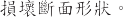
(3)
I
切割後應清除毛刺及鎔渣。
避免切割時發生變形，如有需使用常溫的機械方法矯正。
矯正過程應加保護墊以避免構材局部受損及變形。
如需加熱矯正， 不可澆水冷卻，需防材料材質變化及新內應力產生。
焊接構材的切割尺寸大小，須考慮因焊接所產生的收縮焊切加寬。
材料開孔：
構材之螺絲接合開口，如以沖壓開孔容易造成邊緣凸超，應以機械加工或雷射加工方色作， 孔中心軸應與開口面垂直。
鑽孔或沖孔避免開孔產生捲超、歪斜及凸出，將影零摩擦力的傳
遞。
結構構材的翼板 與加勁肢（突唇 ） 盡量不進行裁剪與開孔 。
5.
(1)
(2)
材料切削加工後處理
切削加工後的毛邊要哦實處理。
原有鍍層會於切削面破壞及裸露，需即時作適噹的保存及塗瞿處
珪！。
4.1.2 成形加工
型材構件的基本成形主要製作方法爲以下
折彎：
以板材折彎或彎曲，形成簡單形狀的結構件。
輾壓：
需預先設計材料展開圖，再進行切割材料，再以輾壓( press brake ) 工法於壓床製作而成。
一般構材形狀較為簡單者，如角形斷面(angles)、槽形斷面 (channels)、Z 形斷面(Z-sections)等，可以此法實施。但受限於壓床可加工長度，構材長度受限。受限於模具彎曲半徑，彎角受限，不適當彎角易造成彎曲裂紋。夾持不當易造成邊緣不齊、歪斜或不對稱。
如較複雜斷面的型鋼以輾壓工法製作，工序多且複雜，較爲費時，且誤差容易累積，在成本上亦較爲昂貴。
輥軋：
輥軋( cold roll forming )實名為冷彎成形，是以整捲的鋼材經解捲、整平對中、多站多段經輥輪模具連續成形製作的型材，具有高速度及高品質成形特色。
構材長度可自動量測依規劃自動剪切成設計需求長度與精度，最大的剪裁長度如不考慮運搬及扭曲變形控制，可達 12 m 以 上。
冷軋型鋼構材製造所使用之鋼材，如以鍍鋅鋼或鍍鋁鋅鋼爲基材，則考量其鍍層的表面品質，並避免輥輪模具的摩擦損傷，磨潤系統設計是必需的防護。
容許誤差
冷軋殘留應力與材料本體之變異性，會造成構材製造時的差異，如垂直向的彎曲(bow)、水平向的彎曲(camber or sweep)、扭轉 (twist)、外張與內縮(flare) 等問題。
型材結構構材可參考 ASTM C955 所示的製造容許誤差規定。型材非結構構材可參考 ASTM C645 所示的製造容許誤差規定。
型鋼構材在製作時可能產生誤差，如此將導致如斷面尺寸、斷面形狀與構材度等之差異。設計者應明定構材製作之容許誤差，如未於設計圖說詳細說明時，則依下列要求：
構材長度誤差：±0.4 - 3.2 mm構材直線誤差：±0.4 - 6.4 mm斷面尺寸誤差：± 0.1 - 0.4 mm
斷面肢材間之角度誤差：± 1°-2°
內彎半徑：
斷面肢材間轉角處之內彎半徑一般取鋼材厚度的二倍。
高強度鋼材則需較大之內彎半徑，依鋼材強度而有所改變，一般為鋼材厚度的二至五倍，依設計者之要求定之。
型材開孔：
型材腹板開孔須以構材腹板中心線�準。
孔洞邊距、孔洞大小、孔洞間距均有其安全考量的最小距離。
孔洞位置、數目與排列模式，將影響構件的強度分布。
如開孔造成安全疑慮， 應予修補開孔護板，其設計須依設計規範。
彎曲加工：
材料與型管材的彎曲加工，於常溫下進行處理。
高強度材、加工硬化材，或熱處理構材的彎曲加工其變形抵抗會增加。
材料或型管材可彎曲半徑的大小， 隨材料之強度或厚度增加而改變。
當彎曲角度大時，或通過彎曲容易改變橫截面形狀時，請使用夾具或其他適當措施以防止有害的形狀變化。
彎曲加工使用的模具，須平滑，不可有傷痕及凹凸不平。
構材彎曲加工時，為避免構材內外表面產生龜裂，粗糙表面，傷痕，皺紋及凹凸不平等缺陷，須使用適當的彎曲半徑與彎曲模具。
型材彎曲需注意對稱性，且長邊、短邊與加強肋的變形抵抗不同。
圓管雖外表為對稱性材料，但如為焊接圓管，焊道處為其奇異處，進行彎曲成形時需考慮變形點。
彎曲加工時發生變形須用適當的機械方法矯正。
成形加工後處理
成形加工後的切邊毛邊要確實處理。
原有鍍層會於加工面破壞及裸露，需即時作適當的保存及塗覆處理。
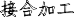
接合加工
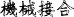
機械接合
1.機械接合：
鋼構的機械接合主要為螺絲接合，其中包含自攻螺絲、螺栓、高張力螺栓、基礎螺栓等。
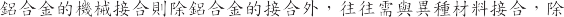
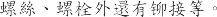
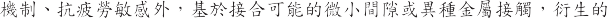
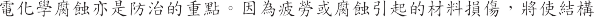
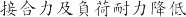, 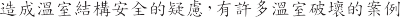
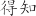, 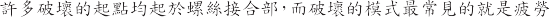
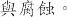
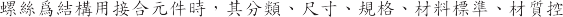
CNS
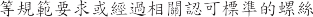
TISB1059 TISB1125 TISB1071
SAET78 ASTMB633 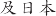
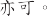
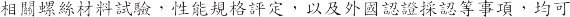
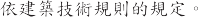
2.
(1)
1)

2)  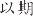
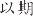
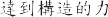 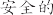
3) 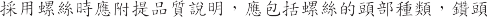
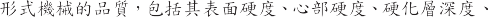
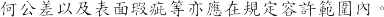
4) 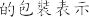 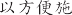
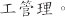
5) 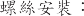
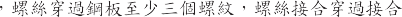
12.7 mm
9.5 mm
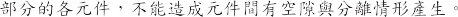
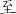
6)
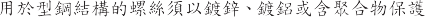 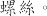

(2)
1) CNS JIS
2)
3
3)
4)
1) CNS B1067 JIS B 1186 
2)
3)
如果連接件之間存在間隙，從而降低了滑動強度，則插入－塊填充板以對此進行補償。
摩擦表面處理:
對接合面的摩擦表面進行適當的表面處理，以確保摩擦力。紐裝之前，請先汨除氧化皮，浮銹和灰塵、除油，油漆等。
螺栓長度：
螺栓長度是緊固後長度加上適當長度，
以避免發生由於螺釘長度不足而導致的緊固失敗。
M12 + 25mm M16 + 30mm M20 + 35mm M22 + 40mm M24 + 45mm
高強度螺栓之鎖固
鎖固螺栓須放置墊圈放在螺栓頭下方和螺毋下方，然後鎖固螺毋。 只有在不可避免的情況下，才能直接以螺栓頭鎖緊。
如果螺栓頭或螺毋下表面與連接件之間的傾針角大於 1/20，則需使用梯度墊圈等。
使用保養良好與檢驗合格的工具，以鎖固螺栓，以獲得標準的螺栓張力。
鎖固螺栓，須以正確的鎖固程序以確保所有螺栓都能有效工作。
鎖固螺栓後須確認螺栓的鎖固力。如檢查不符者，需對其進行補正。
螺栓製孔
製孔精度
根據螺栓直徑，以下值為精度標準值。
螺栓直徑小於 20mm，孔徑為軸，則直徑+ 1.0mm
螺栓直徑超過 20mm，孔徑為軸，則直徑+ 1.5mm
除設計圖中特別規定，用於緊固柱底的基礎螺栓的孔精度為 5.0mm。 在通過熱浸鍍鋅等使孔徑變小時，可以根據鍍層厚度來增大孔徑。
製孔方法：
以沖孔製孔的板厚度不超過 13mm。
所有沖孔必須是圓形的，垂直於板表面，精確地確定孔的位置。
如果板厚超過 13mm，將使用鑽孔或雷射加工。鑽孔時，必須盡可能防止彎曲和變形。
鑽孔引起的彎曲和應變必須在室溫下機械去除，並且必須去除所有切屑。
基礎螺栓
基礎螺栓的材料應為中華民國國家標準 CNS 或 JIS 通用結構的軋製鋼和建築結構的軋製鋼筋中指定的材料或標準以上。
安裝基礎螺栓， 使用模板將基礎螺栓正確定位。
基礎螺栓使用雙螺母和墊圈，螺栓的末端在螺母外側應具有
3 個或更多螺紋。
當嵌入混凝土中時，可能無法使用雙螺母。可通過使用型鋼，加強筋等來精確地保持基礎螺栓，並進行固定，以使其不產生運動，不產生下偏斜等。
鋁合金構材機械接合作業要點
鋁合金螺栓接合
用於鋁合金構件的螺栓和螺帽可為鋁合金，不銹鋼，鍍鋁鋼或鍍鋅鋼。
墊圈用於主體結構中的螺栓和螺母。
墊圈的材料應與前一項所述的螺栓相同。
鋁合金與異種金屬接合
與異種金屬接觸時將鋁合金構件與鋼螺栓，螺母，墊圈，鉚釘結合，以及與鋼或類似異種金屬接觸或結合時，視情況而定進行以下絕緣處理以防止腐蝕。
用於連接鋁合金構件的螺栓必須鍍鋁或鍍鋅。
如果鋁合金部件與鋼或相似的異種金屬接觸，則鋁合金和鋼或相似的異種金屬接觸表面均應塗覆耐蝕底漆或在裝配前進行填縫。
在結構強度符合下， 兩金屬間可夾入高分子墊片等，以使其電氣絕緣。
鋁合金與鹼性材料接合
鋁合金構件避免與鹼性材料直接接觸， 如混凝土、石膏和磚。
在潮濕環境中安裝在混凝土，水泥砂漿或石膏中時，需在部件的嵌入表面上塗防潮漆，如瀝青塗料。
鋁合金與多孔性材料接合
當鋁合金與木材，土壤等接觸時， 如於潮濕環境極易造成腐蝕。
在潮濕環境中鋁合金與土壤或木材接觸的地方，需在兩者的接觸面上塗上鋁粉漆或瀝青塗料等。
當在潮濕環境中接觸多孔材料時，在材料表面塗上上述塗料，以抑制水分吸收。
在嚴酷的腐蝕環境中在沿海等嚴酷的腐蝕環境中，可使用鋁塗料進行防銹塗層。
鋁合金塗層的基材表面處理，包含酸洗、鹼洗、拋光，另於鋁合金構件塗層的底漆可使用耐蝕底漆。
鋁合金鉚釘接合
鋁合金間之接合可使用鋁合金�接。
鋁合金鉚釘孔的直徑需略大於標稱軸徑， 控制在 6%以內。
鋁合金鉚釘打設原則上於低溫下施行。
鉚釘接合上使用機械打擊，鉚釘要完全填充鉚釘孔，且鉚釘頭與孔成同心，與構材的表面需良好接觸。
組合材於組合前預先修正，避免組合後產生歪斜或扭曲等。
接合部預先使用螺栓緊固後，再打鉚釘。
接合部的鉚釘及螺栓孔，必要時使用邊磨機修邊，使孔位一致呈圓形。 此時不得使用擴孔釘擴大孔徑。
完成打設的鉚釘不得有下列缺失
有鬆弛者
形狀不正常者
頭部與軸心不一致者
頭部有列痕者
頭部與構材面不密接者
打設鉚釘時須避免損壞構材。
I
焊接接合
焊接工法
溫室的各構件連接，常以焊接工法進行接合。完整的焊接程序，包
含焊接方法與程序設計、銲材選擇與處理、銲角前處理丶焊接環境控制丶焊接設備使用丶焊接執行、銲後處理等。需考量銲後熱影零區及應力擇除後可能的變形，需專業技術及長時間的工序。
銲後結構材料仍須後處理製程，需經構材及焊接點的除銹處理，且因連接機構區多死角及不規則處，後續的酸洗除銹及浸鍍很容易有酸液殘留及浸鍍不完區。完整的後處理程序將包含，鍍前處理，熱浸鍍處理丶鍍後處理，這是需專業技術及專業製造廠才得以完成，此熱鍍製程也是溫室工程的瓶頸區段，往往造成工程的延誤。熱鍍工程計價以重量為主，外加型式加價，將成為温室工程的一大成本。温室訂單的總工期不長，但往往需合約簽訂後才下料製作，但因連接機構的焊接及後鍍處理，需耗費很長工期，成本及工期。銲後工件重量加重，體積變大、形狀不一難齊，運輸及維裝也是一大難題。
以上為於工廠端的焊接工程，但如於温室維裝現場花銲或補銲，基於品質要求，技術上焊接工法仍應如廠內完整紇作，但現場環境實難控制，品質問題需更加注意。
焊接人力規定
焊接接合作業需先經焊接專業工程師完成焊接程序設計。
應設焊接專業人員，督導指揮焊接作業。
執行焊接作業人員，應具有相關焊接合格證照。
材料準備：
銲條
銲條保存於不吸濕氙的環境，有吸 濕之虞處須乾燥後再行使用 。
被獲脫落 污損變質者不得使用。
焊接尺寸
焊接元件尺寸 須考慮焊接而引超的收縮、變形及焊接加寬等因素。
開口加工
接頭的開口須正哦加工至設計指定的形狀。
毋材
焊接面在焊接前須先除去水分、灰塵、油、塗料及其他不純物。
焊接構材的塗裝
須於焊接的構件 ，其焊接線超50cm內不得塗裝。
焊接預紐合
正哦的紐合
焊接構件的預結合需用適當的模具、夾冶具等方法正哦結合。角銲部分儘量密接 對銲的接頭形狀須使能與設計圖一致 並以正哦的紐合能保持正哦接頭角度、間隔與位置的方法接合。
變形預防與對策
右使焊接後構造物的形狀正哦 由焊接形式與焊接順序推估焊接完成後的最小變形量 必要時使用預置偏量或其他控制法預先處理。
暫固與暫接
右使構材維持正哦位置 須作適當的暫固或暫接。
暫接以最小程度苑行 如右本銲的部分 則可完全焊接。
焊接設備準備
焊接機需具足夠功率且性能維護良好。
焊接電纜絕綠安全良好 具足夠負載電流及長度。
現場焊接位置附近具備能容易的調整電流的功能。
焊接接地璀實 並預防損及其他周邊設備。
焊接泥工
災害防制
焊接設備需無漏電或電擊的危險 有充分防護焊接金屬掉落或因電弧產生火災的設備 及不受電弧光危害的措泥
焊接環境
因下雨毋材表面浸濕或強風時 不得焊接。
但如焊接工及焊接部位有安全的保護且毋材有適當的處置則不受此限。
氣温在0C以下不得焊接。
氣温0~15C 於焊接始點10cm內之毋材加熱至36C以上始可焊接。
電流與電壓
視銲條的種類尺寸及作業姿勢選定適當的電流與電壓。
作業模具
工場焊接使用適當模具 儘量向下作業。
焊接作業
焊接作業的方式及順序的選定以能使撓度及殘留應力力違到最小之程度 銲條的位置要考慮電弧長與角度 銲條璀實能夠充分熔入 且能防止氣泡、銲渣的混入、倒切、銲跡不齊、重疊等缺失 焊接帶的寬度在銲條直徑的3倍以下。
形狀尺寸
焊接表面要儘量平滑呈規則性的波狀 焊接範圍不可小於設計尺寸。可稍微超過設計尺寸 但要避免過度的焊接厚度及明顯不規則的表面形狀。
對銲
從兩側焊接時若被面打麿後 背面也要焊接 不從兩側焊接時
勻溫室安全構造手冊
背面須放置背墊板，焊接要求完整。使用與毋材同材質的墊板，須一併充分熔入。
角焊
斷續焊接的長度為有效尺寸至角肉大小的2倍以上。 角肉補強厚度要於0.1S + 1mm以下（S為指定厚度）。
電弧的始點
電弧的始點為焊接開始的部分或延續焊接的部分，均須注意熔接不良或銲渣滲入。
暫停
切斷電弧時以焊接金屬充分埋置於焊接的終端位置。 更換銲條時，先前焊接終端部附近的銲渣須清除乾淨後，按電弧的超點要領縑續作業。
多層焊接
多層焊接的各層焊接前，須先完全清除前層表面的銲渣及其他有害焊接作業之物。
焊接部位檢查
必要時於下述工程中方色行焊接部的檢查
著手焊接前
焊接作業中
完成焊接後
焊接完成後銲渣必須清除。
焊接修正
不正嚀構材
構材的形狀尺寸有偏差時須修改。尺寸不足時補銲後再以打
磨機模平。過度偏差的情況則需廢棄。
不良焊接的修正
焊接金屬的削除銲渣滲入、重疊、焊接不良、氙孔及接縫吹孔
I
等部分，在不損害其他熔鑄金屬及毋材下，須剝除麿平後再行焊接修正。
熔鑄金屬發生龜裂時，將其熔鑄金屬全長削除再行焊接。
追加焊接
超切或焊接範圍不足的部分，須添加熔鑄金屬至所規定尺寸。修正缺陷須使用直徭較小的銲條，修正超切部份不得使用超過 4mm 的銲條。
撓度修正
因焊接熱所產生的撓度，使用機械或加熱矯正。加熱温度約650°C 以下。
銲後防蝕塗層
工場塗裝
清除銲跡丶銹、銲渣丶油污後，泥行規定的塗裝防蝕作業。
埋設於混凝土部分，需先塗裝，且應超出交界處。
焊接處理後須塗裝保護。
與高張力螺栓接合部的摩擦面不塗裝且需貼附保護層。
現場塗裝
焊接完成後，焊接部及其附近燒損部分，清潔乾淨後，按工場塗裝的標準作防銹塗裝。
塗裝乾燥後，實犯規定的修整塗飾損傷部分。
表面處理加工
範圍
基於溫室結構處於高熱高濕 充滿因灌溉及呂養苑作引超的水氣及酸鹼性氣體等 使溫室結構處於化學腐蝕的環境 而溫室亦為多項構件經接合加工維合而成的裝配式建築 巳3機械接合與焊接接合 如此於機械接合或焊接接合區域 均將充滿電化學腐蝕的危機 本節「表面處理加工」將以其結構材料的表面處理加工 創造材料防蝕機制以維持溫室結構安全。
腐蝕分析
溫室結構設計中對各構造材料的性能強度設定乃依照材料標準測試法於常溫下所測得的均質材料數值。但只祭應用下 構造材料並不會一直如均質材料性能設定般的表現 其會隨寸間累積及環境的負荷 出現物理性的性能衰退如疲勞、潛變、脆化、磨耗、侵蝕 或化學性的腐蝕、電化學腐蝕、微生物腐蝕等。這些腐蝕因子將會造成溫室構造的安全降低的重大威脅。
主要的腐蝕因子分類如下
物理性腐蝕 如氣蝕、風蝕、水蝕、固體侵蝕。
化學性腐蝕 如酸、鹼、鹽、有機物。
電化學腐蝕 如異種金屬腐蝕、應力腐蝕、濃差電池腐蝕。
微生物腐蝕 如微生物結節腐蝕
防蝕設計
旱握溫室所面臨的外在環境及內在環境負荷 分析其可能的腐蝕因子 是防蝕工程設計的第一要務。然後依照腐蝕因子的可能性 進行對應的防蝕工程設計及相對應的表面處理法 以保護、維護及提升溫室構造的使用壽命 是溫室構造安全的一大重要工作。
表面處理
温室構造材料之表面處理加工程序因其實苑順序如下
基材處理
以機械方法或化學方法 對基材表面除汙、脫脂、脫銹、並產生適當槔度。回復全屬的基材表面 並創造適當的表面機理 以利後續的鍍塗農處理。
鍍層處理
以全屬鍍層 如鍍鋅、鍍鋁鋅、鍍鎂鋁鋅或全屬粉末堆積(富鋅底漆冷鍍鋅) 進行陽極衹牲或陰極防蝕的電化學的防蝕方法。
塗層處理
以化學轉化塗層鈍化(如磷酸鹽、草酸鹽、鉻酸鹽、琉酸鹽) 或以密封塗裝(如底漆、中漆、面漆的多道次塗層)進行物理性及化學性的絕緣防蝕方法。
農層處理
建立強化的保護防銹皮膜(如樹酯、PVC、PVF、PVDF …)提升防蝕耐久性。
4.3.1
1.

2.


SIS-05-5900 A B C D
A 
B C
D
3.
(1)
1)
2) ( )
3)
4)
(2)
1)
成酸鹼洗後，充分以清水洗淨，確勿殘留將造成二度腐蝕。
以磷酸鹽或鉻酸鹽皮膜的化成處理，將金屬的表面輕輕腐蝕形成磷酸鹽或鉻酸鹽結晶，增加塗膜的附著性。多用於鋼材在工廠預先塗裝前的處理方式。但皮膜處理如有用重金屬溶液，將不利於施工人員安全及後續環保處理。
化學處理的廢液，需積極的全面管制處理。
基本金屬材料的除銹等級
St 除銹等級(以手工具或電動砂輪機處理者) ：
St0 ：未做除銹處理之鋼鐵表面。
St1 ：使用鋼刷做輕度的全面刷除浮銹及鬆懈氧化層。
St2 ：使用人工、電動鏟具、鋼刷或研磨機等，將鬆懈氧化層、 浮銹及其他外界異物去除後，用吸塵器或壓縮空氣、毛刷將灰塵去除。
Sa 除銹度等級(以噴砂處理者) ：
Sa0： 表面未做除銹處理 。
Sal： 輕度噴砂處理 ，除去鬆動氧化層、鐵銹以及外界異物 。Sa2：中度噴砂處理，除去大部份的氧化層、鐵銹以及外界異物，並經吸塵器等清除灰塵，表面應僅有微小斑點異物留存，處理完成的表面應呈近似白色金屬色澤，為防蝕塗裝工程要求的表面處理 。
Sa2 1/2： 澈底的噴砂處理， 經處理後 95%的氧化層鐵銹及異物均去除，經清除灰塵後的表面應呈白色金屬色澤，為防蝕塗裝工程最普遍的表面處理要求 。
Sa3 ： 絕對徹底的噴砂處理，所有的氧化層，鐵銹及異物澈底除去，不留任何微小異物，經灰塵清除後的表面是均勻白色金屬色澤，此為表面處理之最高標準 。
表面粗糙度標準
表面粗糙度平均值一般應在 25- 75 µ m 之間，或依據塗層及鍍層特性而規定的粗糙度。噴砂的表面粗糙度，對於塗膜的防銹功能影響很大，粗糙度大時，可以增加油漆之附著性，但也降低鋼材表面凸點的塗膜厚度，且容易產生針孔，減低漆膜的防銹能力；反之，則降低油漆的附著性。
因此須視油漆特性及漆膜厚度選用合適的表面粗糙度。
鍍層處理加工
目的
鍍層處理乃以金屬鍍層(如鍍鋅、鍍鋁鋅、鍍鎂鋁鋅)、金屬扮末堆積、富鋅底漆冷鍍鋅等方法，進行陽極衹牲或陰極防蝕的電化學的防蝕方法。
鍍層處理加工其主要方法有四種，說明如下：
熱浸鍍鋅法
鍍鋅電鍍法
鍍鋅噴瞿法
鍍鋅塗裝法
熱浸鍍鋅法
熱浸鍍鋅法可分為：
純鋅鍍層
鋅鐵合金鍍層
鋅鋁合金鍍層
鋅鋁鎂合金鍍層
標準製程為
前處理（脫脂酸洗）與退火。
浸漬於融熔鋅液（鋅鋁）的鍍槽中鍍鋅，鍍鋅層量利用鋅槽上方的氣刀調整。
合金化處理、調質與整平。
表面處理（乾燥採用磷酸鹽或鉻酸）或塗瞿有機樹脂(耐指紋塗膜)，防止白銹發生。
鍍鋅鋼材表面的最小鍍鋅量應符合 CNS 或 ASTM 之相關規
1) ASTM
4-1
|
|
|
| Oz/ft2( | g/m ( ) | mils( | mm( |
|
G40/Z120 | 0.40 | 120 | 0.34 | 0.0085 |
G60/Z180 | 0.60 | 180 | 0.51 | 0.0127 |
G90/Z275 | 0.90 | 275 | 0.77 | 0.0194 |
5% |
GF45/ZGF135 | 0.45 | 135 | 0.39 | 0.0098 |
GF60/ZGF180 | 0.60 | 180 | 0.53 | 0.0133 |
GF90/ZGF275 | 0.90 | 275 | 0.79 | 0.0198 |
55% |
AZ50/AZ150 | 0.50 | 150 | 0.80 | 0.0200 |
2)
4-2
|
|
A653/A653M | 5% A875/A875M | 55% A792/A792M |
| G60/Z180 | GF60/ZGF180 | AZ50/AZ150 |
| G40/Z120 | GF45/ZGF135 | AZ50/AZ150 |
4.
電鍍新法是以電化學法進行的鍍層方法 對大量的零件很有效的防銹工法。但由於電鍍鋅銅板的鋅層很薄 不建議使用於暴露於大氣環境的室外屋項、外牆等建築物。
電鍍鋅鍍法生產的鍍鋅銅片的鍍層可分爲：
純鋅鍍層
鋅鎳合金鍍層
鋅鐵合金鍍層
電鍍鍍鋅製程：
銅材的脫脂、清洗、酸洗
電鍍
構材的變形或焊接銲道的龜裂檢查與處置
鍍鋅銅材表面的最小鍍鋅量應符合 CNS 或 ASTM 之棓關規 A;_ 。
鍍鋅噴農法
鍍鋅原理
金屬噴農法乃運用熔射技術將鋅處理於銅鐵表面。
以熱能加上動能 熔射材與基材進行機械性的結合 進而高温下擴散接合。
熔射槍以鋅線或鋅分為原料 並且以瓦斯火焰或電弧將鋅熔化 然後在藉由高壓氣體將鋅液滴噴在銅鐵表面。
鋅層之厚度由 30-300 μ m 不等 僅靠機械力附著銅鐵表面。
適用範圍
此作業方法適用於處理形狀簡單的較大構件 也適合運用在因碰撞或焊接而受損傷的熱浸鍍鋅構件。
鍍鋅噴農法製程：
基材處理：
銅鐵表面需經過嚴謹的噴砂前處理程序 使表面潔淨度符合
勻溫室安全構造手冊
Sa2 1/2
等級。
熔射材加熱處理：
熔射槍以鋅線或鋅粉爲原料，並且以瓦斯火焰或電弧將鋅熔化。
熔射材射出處理：
藉由高壓氣體將鋅液滴噴在銅鐵表面。
鍍鋅塗裝法
鍍鋅塗裝原理
進行銅鐵表面塗裝所用的塗料多爲富鋅漆，富鋅漆是在有機或無機的接合劑中混入鈿鋅金屬粉，其可為單劑或複劑型塗料。
鋅成分在乾燥完成的漆膜中應至少佔
92 % 的重量，約為
62 %
之體積比率，此濃度要求在於鋅粉可以相互接觸，使彼此間及與
底材問具有良好的導電性。
適用範圍
以富鋅底漆塗裝亦可以稱為「冷鍍鋅」，主要可產生與熱浸鍍鋅相當的功能。適用於接合區、補鋅區。
鍍鋅塗裝製程：
基材處理
塗裝處理：採用方式可為刷塗或噴塗。
固化處理
塗層夷理加工
1. 銅構表面塗裝保護防銹層的處理前項鍍鋅處理已具備防銹功能，再進行表面塗裝有美觀因素丶鍍層保護耐久性提升及其特殊因素要求。銅構鍍鋅防銹層後進行表面塗裝於銅板（捲），除具有鋅的保護功能外，另有霞蓋隔絕保護防銹蝕的功能，一般塗裝採用有機塗料。其抑制作用因塗料的種類、膜厚及花工條件而不相同，常見塗膜厚度
100 μ m
2.
(1)
(2)
(3)
3.


4-3

|
|
|
|
|
SIS Sa2 | SIS Sa21/2 | SIS Sa3 |
| SIS St2 | SIS St3 | SIS St1 |
| O | O | O | O | O- | O |

|
| O | O | O | O |
| O | -X |
| O | O | O | O | -X | O- | X |
| O | O | O | O | X |

| X |
| O | O | O | O | -X |
| X |
| O- | O | O | O- | X |

| X |
|

| O-- | O | X | X | X | X |


O X
4.

4-4
|
|
|
|
|
|
|
|
|
|
|
|
O |
O- |
X |
X |
X |
O- |
X |
X |
X |
X |
| O | O | O | X | X |

| X | X | X | X |
塗料 |
|
|
|
|
|
|
|
|
|
|
聚氣乙烯塗料 |
O |
O |
O |
O |
X |
O | �-- X |
O |
O |
O |
環氧樹脂 塗料 |
O |
O |
O |
O |
X |
O |
�-X |
O |
O |
O |
無機矽樹塗料 |
X |
O |
O |
O |
X |
� |
�-X |
O |
O |
O |
苯酚樹脂 塗料 |
O |
O |
X |
X |
X |
O |
X |
X |
X |
X |
哨化纖維塗料 |
� |
� |
� |
� |
X |
� |
O |
X |
X |
X |
聚胺基甲酸脂塗料 |
X |
�-O |
�-O |
O |
X |
�-O |
X |
O |
X |
X |
永特龍塗 料 |
X |
� |
� |
X |
X |
X |
X |
X-� |
O |
O |
永氟龍塗 料 |
X |
� |
� |
X |
X |
X |
X | X-- � |
X |
O |
O 良 �可 X 不良
4.3.4 農層處理加工
農層的處理加工 標
嚴苛環境強化耐蝕處理 如土壤中的銅管的農層處理
表面玻壞後的修補處理 如運搬或紇工中的刮痕、焊後焊道處理。
嚴苛環境強化耐蝕處理
腐蝕環境分類
ISO 依據大氣腐蝕現象將腐蝕環境分類為 C1、C2、C3、C4 與 C5-I 及 C5-M。農業溫室雖當處於鄉村地區 但高腐蝕環境的工業區也經當在附近 台灣四面環海 離更高腐蝕環境的濱海區也不遠 農業溫室內環境則是高溫高濕環境 故列舉的腐蝕環境並無法涵蓋所有的情況 甚至很多場域同時有多項地域因子 因此需緤合考量設計。ISO12944 腐蝕環境分類如表 4.5 描逑了環境因素對銅結構的影零。包括暴露於大氣中及浸於水或埋於土壤中的銅結構。對於不同的大氣環境 建立了腐蝕性的等級分類。也描逑了銅結構浸泡在水中或埋入土壤中的腐蝕情況。所有這些環境都和防腐塗料體系的選擇密切棓關。
嚴苛環境表面處理設計
基材處理、鍍層處理、塗層處理、農層處理
農層材料的種類
混合材料複合 如瀝青
纖維材料複合 如玻璃纖維
層狀材料複合 如橡膠或塑膠


4-5
| / ( 1 ) |
|
|
|
g/m² |
m |
g/m² |
m |
|
|
C1
|
10 |
1.3 |
0.7 |
0.1 |
- |
/ / |
C2
|
10-200 |
1.3-25 |
0.7-5 |
0.1-0.7 |
|
/ |
C3
|
200-400 |
25-50 |
5-15 |
0.7-2.1 |
/
/ |
/ / |
C4
|
400-650 |
50-80 |
15-30 |
2.1-4.2 |
/ |
/ / |
C5-I () |
650-1500 |
0-200 |
30-60 |
4.2-8.4 |
|
|
C5-M ( ) |
650-1500 |
0-200 |
30-60 |
4.2-8.4 |
|
|
表面玻壞後的修補處理
表面鍍層所易造成的玻壞 可分爲：
表面刮痕容易積聚污物及造成金屬電化學腐蝕過程 使得玻壞處出現黑色點狀銹蝕。
焊接對鋼材的影響
焊接時在接近焊接區域因受熱而使材質變化其作用類似熱處理 從而加速金屬本身的腐蝕。
焊接產生材料變質
焊接部係由熔填金屬、受熱影響區及不承受熱影響的毋材維成。變質區或受熱影響區會產生維織變化 由距銲道的距離長短而異 其維織是連續變化 維織變化的分類通索可以由金相襯察分辨出來。
表面銲道造成的缺陷
由於助熔劑的殘留及銲道的孔洞 極易使化學物堆積而導致腐蝕 且銲道部分不易清理及塗裝。其處理方式可用人工除銹或化學菓 劑將銲道部份麿平並清除助銲劑後再行塗裝。
玻壞後的防銹蝕處理
進行焊接、栓接及裁切等維構複雜的構件 易造成鋼材表面鍍層的玻壞 依設計需要 需進行玻壞後之防銹蝕處理 則採取農層法以補救此類缺陷 因爲不易再實犯原先同類的表面鍍層處理。
在鋼維構的階段（構造物犯工、運作的階段）進行焊接或維合構件時 須考慮焊接部分的殘留應力與材質改變可能產生腐蝕來犯行防蝕對策。
塗膜層的構造是在下塗（底塗）與塗上（表塗）間的犯行數層中塗 塗膜的保護效杲取決於塗料性能的優劣。
金屬塗料的使用種類多樣 各有其適用的場合。
勻溫室安全構造手冊
5)
銅構廠常用鋅粉漆作為現場焊接部的後續防銹塗層處理，噴塗鋅粉漆（富鋅底漆），如果接著良好、塗布量足夠，鋅粉漆塗裝具有非常優良的防蝕效果，且價格與技術需求較低。
瞿層塗裝施工方式：
一般性在銅鐵材標準施工，在經過表面前處理的銅材上塗佈附著性佳的底漆。
重複塗幾道中塗漆，在砲工現場尙未塗裝面漆前，其塗裝間
隔經過
6-12
個月，附著性也依然良好。
依需求性能塗佈適噹面漆，賦予顏色丶潤滑、光澤及耐候性
等。

聚乙烯基縮丁鞏、磷酸、鉻酸鋅所構成聚乙烯基縮丁醛和磷酸預先混合
於使用前混和聚乙烯基縮丁酪、磷酸、鉻酸鋅
洗滌型底漆
l 液 型
2液型
表 4-6
防銹底漆類型

高鋅底漆 以氧化鋅爲顔料與合成樹脂塗料煉合
有 機 型 高 鋅 系 含 鋅 量
有 機 型 鋅 粉 系 含 鋅 量
90 % 以上
80 % 左右
．無機型高鋅系 以矽酸鈉、經矽酸脂爲形成塗膜成份

I 非高鋅底漆 I 氧 化 鐵 、 鋁 粉 、 鉻 酸 鋅 與合成樹脂塗料煉 合
I 高鋁 底漆 I 鋁粉煉合環氧樹脂或乙烯基樹脂， 鋁粉含量82-92 %

I 鉛系 防銹底漆 I 針 坍 、 鉻 酸 鋅 、 氨腈丶氧化鋅與熟油煉合
I 油 底 漆 I 氧 化 鋅 、 氧 化 鐵 等 與 油 凡 立 水 煉 合

I 清漆底漆 I 氧 化 鐵 、 氧 化 鋅 與打底用 透 明哨基清漆煉合
I 氧 化 鐵 系 防銹漆 I 氧化鐵加乾性油或合 成樹脂